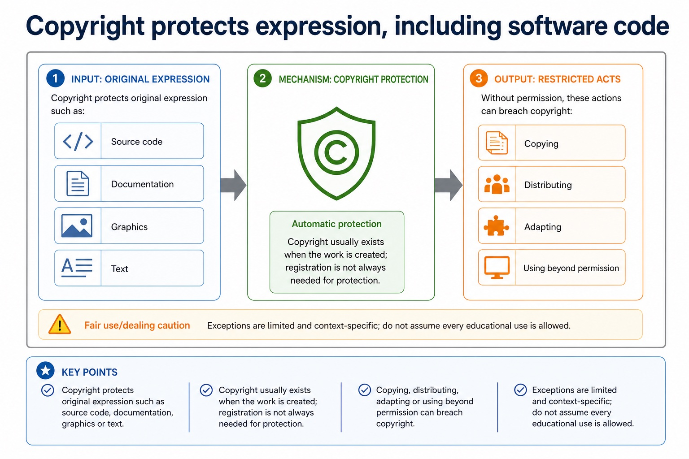

The need for copyright legislation for software
Visual overview
Copyright protects expression, including software code

Visual transcript
- Copyright Protects original expression such as source code, documentation, graphics or text.
- Automatic protection Copyright usually exists when the work is created; registration is not always needed for protection.
- Restricted acts Copying, distributing, adapting or using beyond permission can breach copyright.
- Fair use/dealing caution Exceptions are limited and context-specific; do not assume every educational use is allowed.
Core explanation
Copyright legislation is needed because software can be copied and distributed at very low cost while its creation requires time, skill and investment. It gives the copyright holder legal control over protected expression such as source code and documentation, including copying, distribution and adaptation, so unauthorised use can be challenged and creators can license work and receive revenue. Copyright protects expression rather than every abstract idea, and a limited legal exception is not permission for unrestricted copying.
A software licence is the copyright holder's permission to use protected work under stated conditions; paying for or downloading software does not normally transfer ownership. The licence may allow or restrict installation, copying, modification and redistribution. Copyright legislation establishes the rights, while the licence defines which of those acts the user is permitted to perform.
Copyright legislation is needed to give creators enforceable control over software expression that can otherwise be copied and distributed cheaply. A licence grants permission without normally transferring ownership. The required licence categories are the Free Software Foundation (FSF), Open Source Initiative (OSI), shareware and commercial software; justify a choice from the scenario's permissions, restrictions, support, cost and redistribution needs.
The Free Software Foundation (FSF) emphasises freedoms to run, study, modify and share software; source access is necessary for study and modification. The Open Source Initiative (OSI) defines open-source criteria and approves licences that meet them. Free/open-source software can still be sold and remains protected by copyright; users must follow conditions such as preserving notices, attribution or sharing derivative source under compatible terms.
![Licence idea What it allows or limits Exam caution Proprietary licence Usually permits use under conditions but restricts copying, modification or redistribution. Paying for software usually buys permission to use, not ownership of the code. Open-source licence Allows source code access and certain rights to use, modify and share. Still has conditions such as attribution or sharing changes under the same licence. Creative Commons style Often used for media/text; may require attribution or block commercial use. Check exact terms; symbols are not decoration.](../../assets/diagrams/stage10-infographics/stage10-lesson-075-licensing.jpg)